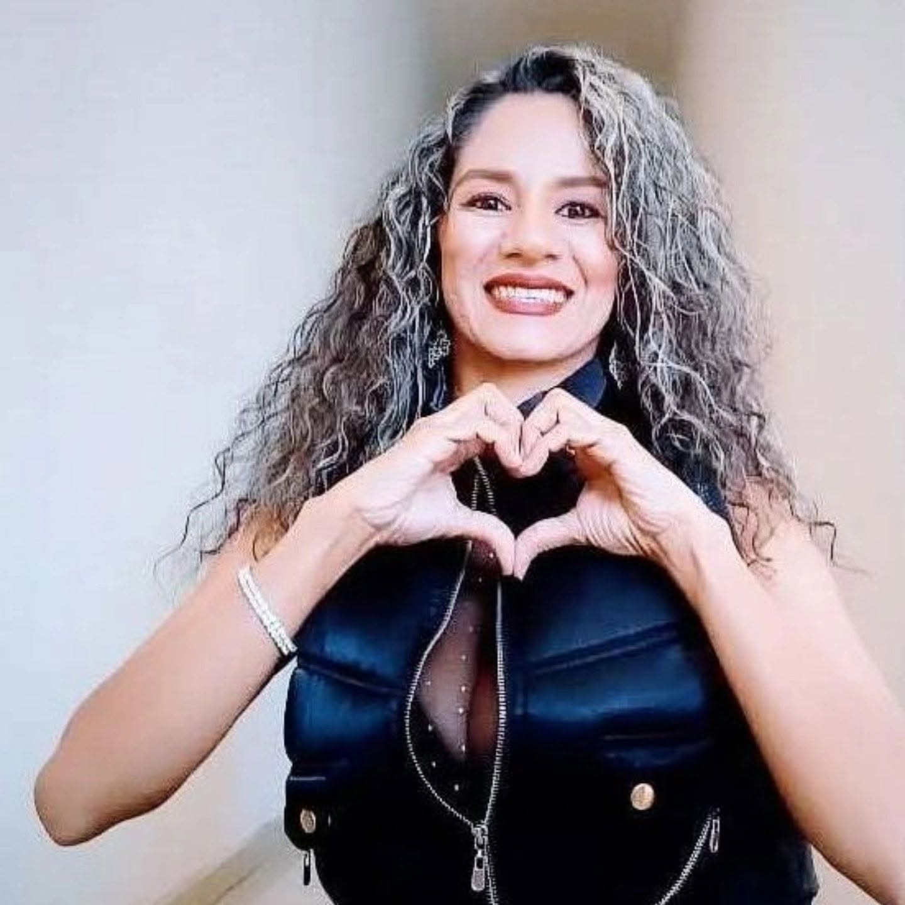
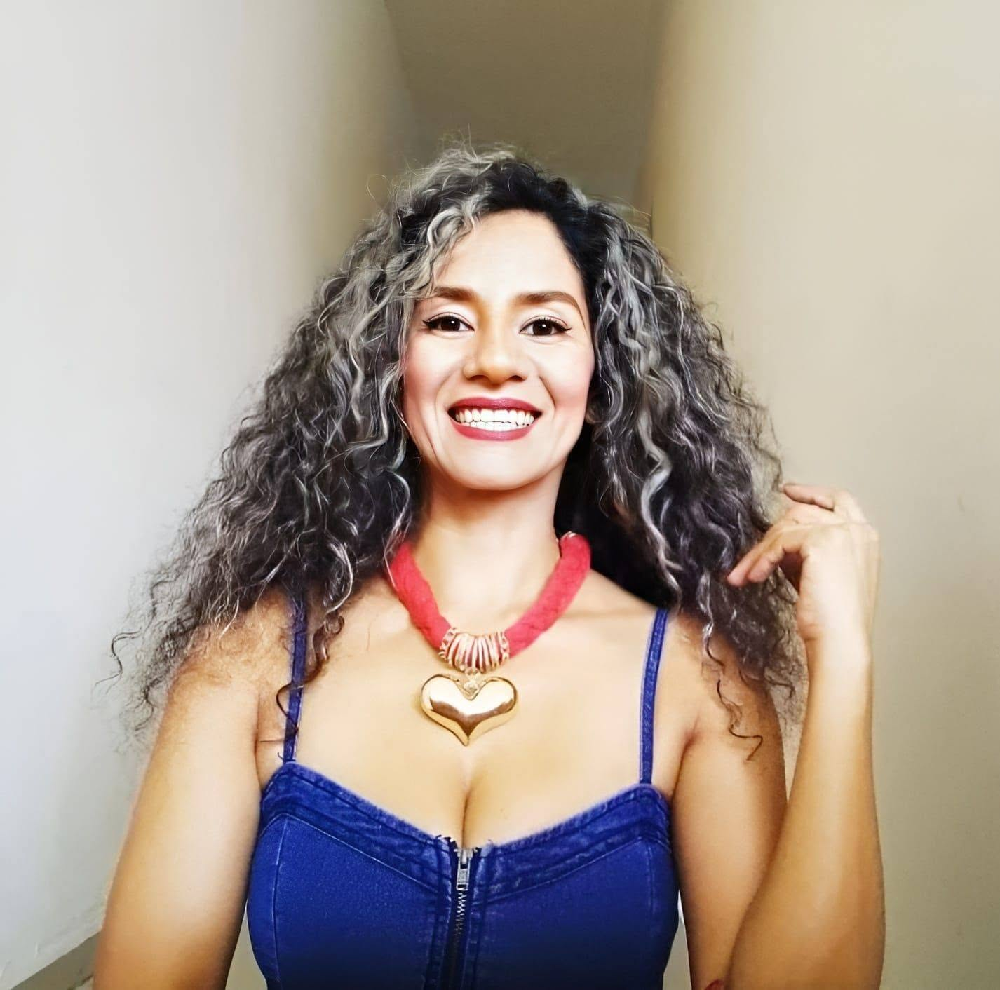

Yesenia Espain:
Canalizadora Angelical y Médium
Encuentra paz, claridad y respuestas a través de sesiones 100% Online guiadas con compasión y profundo respeto espiritual.


El Camino hacia la Luz
Mi misión es servir como un puente amoroso entre el plano terrenal y el espiritual. A través de la empatía profunda y el respeto sagrado, facilito conexiones que brindan sanación, cierre y guía divina.
Cada sesión es un espacio seguro y confidencial, diseñado desde un enfoque altamente profesional para ofrecerte la claridad que tu alma busca en este momento de tu vida.
Sesiones y Guía
Sesiones 100% Online
(videollamada / WhatsApp)
3 Preguntas de Tarot
$120 MXNUna profunda exploración del subconsciente. No adivinatorio, sino una herramienta de autoconocimiento y toma de decisiones alineadas con tu propósito.
Sesiones 100% Online
(videollamada / WhatsApp)
Consulta de Tarot Completa
$420 MXNRecibe mensajes directos de tus guías espirituales y ángeles custodios. Obtén respuestas claras y amorosas para tu momento presente.
Sesiones 100% Online
(videollamada / WhatsApp)
Terapia Angelical
Conexión con Seres Queridos TrascendidosUna sesión profundamente conmovedora donde actúo como puente para comunicar mensajes de sanación, amor y cierre de quienes han pasado al mundo espiritual.
Sesiones 100% Online
(videollamada / WhatsApp)
Limpia Espiritual
$600 MXNSesión online para equilibrar chakras y limpiar el campo áurico de densidades. Restauración de tu vitalidad espiritual y emocional a distancia.
Sesiones 100% Online
(videollamada / WhatsApp)
Agenda tu Sesión
¿Lista para recibir la guía que necesitas? Escríbeme y agendamos tu sesión personalizada.
Escríbeme para reservar tu cita
Yesenia Espain · Canalizadora Angelical
Sesiones 100% Online
(videollamada / WhatsApp)
Envíame un mensaje
Voces de Luz
Experiencias de almas que han conectado.
La sesión de mediumship me trajo una paz que no encontraba hace años. Los detalles que Yesenia mencionó eran cosas que solo mi madre sabía. Fue una experiencia transformadora.
El tarot terapéutico con Yesenia no es como nada que haya probado antes. Me ayudó a ver bloqueos emocionales que no sabía que tenía y me dio herramientas prácticas para avanzar.
Su calidez y empatía se sienten incluso a través de la pantalla. La canalización angelical fue tan precisa y llena de amor que sentí un abrazo físico. Recomiendo sus servicios al 100%.
Únete a mi lista privada
Recibe fechas de webinars, apertura de plazas y novedades directo al correo.
Libre de SPAM. Respetamos tu energía y tu privacidad.